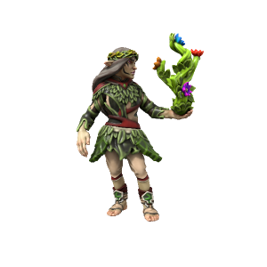

Elf
Elves originate from the woods of T'Savo, where proto-human Iotun interbred with forest nymphs. They are delicately featured with pointed ears, most are very lithe and nimble. While long lived, they are not immortal as nymphs are.
Cultures
Savonic Elves

Languages Low Savonic, Common, High Savonic (elites only)
Accent üó£Ô∏è
Elves from the imperial capital tend to be somewhat disdainful of "lesser" cultures, taking great pride in the longevity and power of their empire.
Kasharite Elves

Languages Low Kushite, Common, High Kushite (elites only)
Accent üó£Ô∏è
Elves of the Kasharite Sultanate are long removed from their Savonic kin, separated by the hostile Atkani steppe. They speak a variety of different languages, worship the eternal flame of the Kash dynasty and culturally are strongly influenced by the Loxodon natives of the land they occupy.
Wood Elves

Languages High Savonic
Accent üó£Ô∏è
Elves from the heavily forested south of T'Savo are a mysterious people, even to their Savonic kin little is known of their ways. They are hostile to most outsiders, but especially to imperials - viewing them as traitors to their nymphic heritage.
Ageing
| Age | Human Equivalent |
|---|---|
| 7 | 4 |
| 20 | 8 |
| 37 | 12 |
| 56 | 16 |
| 77 | 20 |
| 120 | 30 |
| 160 | 40 |
| 200 | 50 |
| 240 | 60 |
| 280 | 70 |
| 320 | 80 |